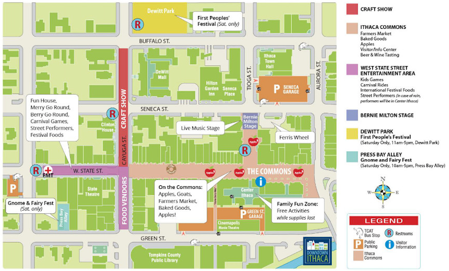

Festival Map
Image from: https://github.com/cdsciavolino/Applefest
Performance Schedule
September 30, Saturday
-
@Bernie Milton Pavilion
- 10-10:45 AM IC Voicestream
- 11-11:45 AM Danza Romani
- 12-12:45 PM Vitamin L
- 1-1:45 PM Ves Da Bee
- 1:45-2;00 PM GIVEAWAYS
- 2-2:45 PM Sunny Weather
- 3-3:45 PM WICB
- 4-4:45 PM Dapper Dan
- 5-8:00 PM Papa Muse
@West State Street Performance Area
- 1-1:45 ICircus
- 3-3:45 PM June with Chandani Belly Dance Troupe
September 31, Sunday
-
@Bernie Milton Pavilion
- 10-10:45 AM Mighty Jet Band
- 11-11:45 AM Sixteen Feathers
- 12-12:45 PM Mirage Belly Dancers
- 1-1:45 PM Mijail Martinez
- 2-2:50 PM Diana Leigh Quitet
- 3-3:40 PM Science Cabaret Presents: A Bite of Science
- 4-4:45 PM Ithaca College Jazz Vocal Ensemble
- 5:15-6:15 PM NEO Project
@West State Street Performance Area
- 2-2:45 PM Zajal the Sugarplum Fairy and Friends for StoryDance
Food
Apple Varieties

(Image from: Ithaca Journal, 2016)
(Image from: Her Campus)
(Image from: Yein's phone)
(Image from: Yein's phone)
(Image from: Yein's phone)
(Image from: Yein's phone)
(Image from: Yein's phone)
(Image from: Yein's phone)
(Image from: Yein's phone)
Check out the list of food and vendors at Downtown Ithaca